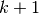
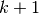

Stacked Denoising Autoencoders (SdA)¶
Note
This section assumes you have already read through Classifying MNIST digits using Logistic Regression and Multilayer Perceptron. Additionally it uses the following Theano functions and concepts: T.tanh, shared variables, basic arithmetic ops, T.grad, Random numbers, floatX. If you intend to run the code on GPU also read GPU.
Note
The code for this section is available for download here.
The Stacked Denoising Autoencoder (SdA) is an extension of the stacked autoencoder [Bengio07] and it was introduced in [Vincent08].
This tutorial builds on the previous tutorial Denoising Autoencoders. Especially if you do not have experience with autoencoders, we recommend reading it before going any further.
Stacked Autoencoders¶
Denoising autoencoders can be stacked to form a deep network by
feeding the latent representation (output code)
of the denoising autoencoder found on the layer
below as input to the current layer. The unsupervised pre-training of such an
architecture is done one layer at a time. Each layer is trained as
a denoising autoencoder by minimizing the error in reconstructing its input
(which is the output code of the previous layer).
Once the first  layers
are trained, we can train the -th layer because we can now
compute the code or latent representation from the layer below.
layers
are trained, we can train the -th layer because we can now
compute the code or latent representation from the layer below.
Once all layers are pre-trained, the network goes through a second stage of training called fine-tuning. Here we consider supervised fine-tuning where we want to minimize prediction error on a supervised task. For this, we first add a logistic regression layer on top of the network (more precisely on the output code of the output layer). We then train the entire network as we would train a multilayer perceptron. At this point, we only consider the encoding parts of each auto-encoder. This stage is supervised, since now we use the target class during training. (See the Multilayer Perceptron for details on the multilayer perceptron.)
This can be easily implemented in Theano, using the class defined previously for a denoising autoencoder. We can see the stacked denoising autoencoder as having two facades: a list of autoencoders, and an MLP. During pre-training we use the first facade, i.e., we treat our model as a list of autoencoders, and train each autoencoder seperately. In the second stage of training, we use the second facade. These two facades are linked because:
- the autoencoders and the sigmoid layers of the MLP share parameters, and
- the latent representations computed by intermediate layers of the MLP are fed as input to the autoencoders.
self.sigmoid_layers will store the sigmoid layers of the MLP facade, while
self.dA_layers will store the denoising autoencoder associated with the layers of the MLP.
Next, we construct n_layers sigmoid layers and n_layers denoising
autoencoders, where n_layers is the depth of our model. We use the
HiddenLayer class introduced in Multilayer Perceptron, with one
modification: we replace the tanh non-linearity with the
logistic function ).
We link the sigmoid layers to form an MLP, and construct
the denoising autoencoders such that each shares the weight matrix and the
bias of its encoding part with its corresponding sigmoid layer.
All we need now is to add a logistic layer on top of the sigmoid
layers such that we have an MLP. We will
use the LogisticRegression class introduced in Classifying MNIST digits using Logistic Regression.
The SdA class also provides a method that generates training functions for
the denoising autoencoders in its layers.
They are returned as a list, where element  is a function that
implements one step of training the
is a function that
implements one step of training the dA corresponding to layer
.
To be able to change the corruption level or the learning rate during training, we associate Theano variables with them.
Now any function pretrain_fns[i] takes as arguments index and
optionally corruption—the corruption level or lr—the
learning rate. Note that the names of the parameters are the names given
to the Theano variables when they are constructed, not the names of the
Python variables (learning_rate or corruption_level). Keep this
in mind when working with Theano.
In the same fashion we build a method for constructing the functions required
during finetuning (train_fn, valid_score and
test_score).
Note that valid_score and test_score are not Theano
functions, but rather Python functions that loop over the entire
validation set and the entire test set, respectively, producing a list of the losses
over these sets.
Putting it all together¶
The few lines of code below construct the stacked denoising autoencoder:
There are two stages of training for this network: layer-wise pre-training followed by fine-tuning.
For the pre-training stage, we will loop over all the layers of the
network. For each layer we will use the compiled Theano function that
implements a SGD step towards optimizing the weights for reducing
the reconstruction cost of that layer. This function will be applied
to the training set for a fixed number of epochs given by
pretraining_epochs.
The fine-tuning loop is very similar to the one in the Multilayer Perceptron. The
only difference is that it uses the functions given by
build_finetune_functions.
Running the Code¶
The user can run the code by calling:
python code/SdA.py
By default the code runs 15 pre-training epochs for each layer, with a batch size of 1. The corruption levels are 0.1 for the first layer, 0.2 for the second, and 0.3 for the third. The pretraining learning rate is 0.001 and the finetuning learning rate is 0.1. Pre-training takes 585.01 minutes, with an average of 13 minutes per epoch. Fine-tuning is completed after 36 epochs in 444.2 minutes, with an average of 12.34 minutes per epoch. The final validation score is 1.39% with a testing score of 1.3%. These results were obtained on a machine with an Intel Xeon E5430 @ 2.66GHz CPU, with a single-threaded GotoBLAS.
Tips and Tricks¶
One way to improve the running time of your code (assuming you have
sufficient memory available), is to compute how the network, up to layer
 , transforms your data. Namely, you start by training your first
layer dA. Once it is trained, you can compute the hidden units values for
every datapoint in your dataset and store this as a new dataset that you will
use to train the dA corresponding to layer 2. Once you have trained the dA for
layer 2, you compute, in a similar fashion, the dataset for layer 3 and so on.
You can see now, that at this point, the dAs are trained individually, and
they just provide (one to the other) a non-linear transformation of the input.
Once all dAs are trained, you can start fine-tuning the model.
, transforms your data. Namely, you start by training your first
layer dA. Once it is trained, you can compute the hidden units values for
every datapoint in your dataset and store this as a new dataset that you will
use to train the dA corresponding to layer 2. Once you have trained the dA for
layer 2, you compute, in a similar fashion, the dataset for layer 3 and so on.
You can see now, that at this point, the dAs are trained individually, and
they just provide (one to the other) a non-linear transformation of the input.
Once all dAs are trained, you can start fine-tuning the model.